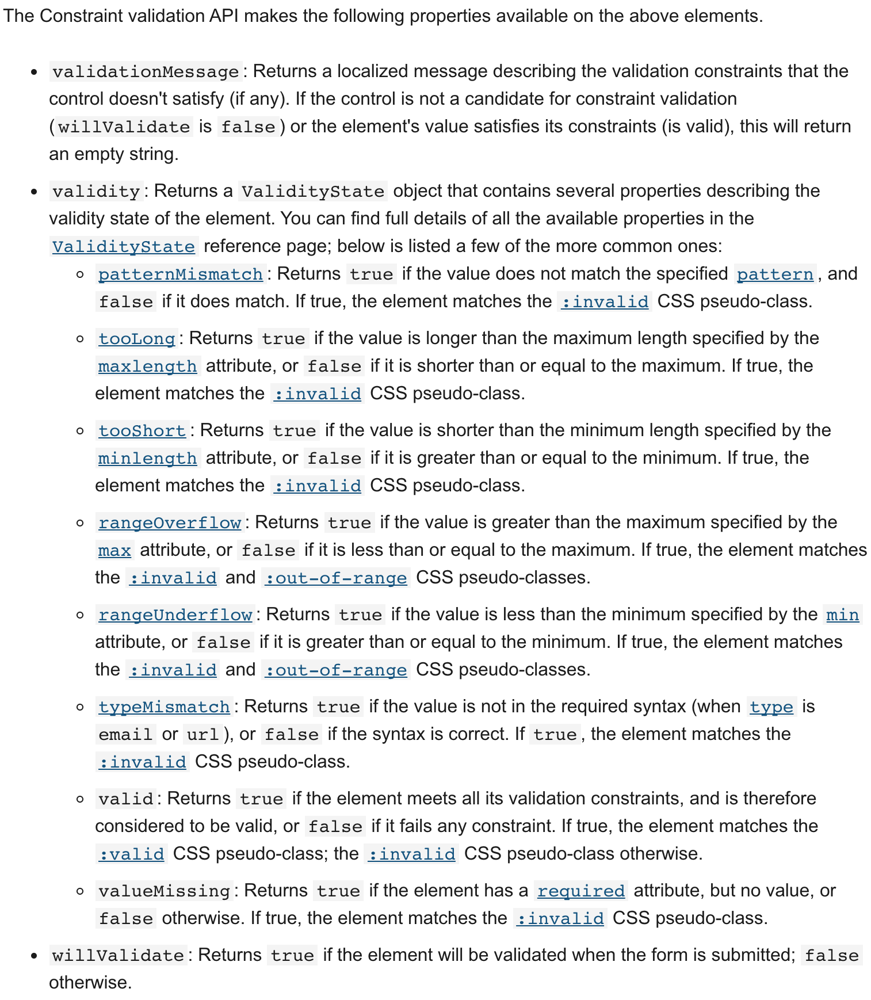

Validating Forms
Client-side Form Validation
- Client-side validation is an initial check and an important feature of good user experience; by catching invalid data on the client-side, the user can fix it straight away
- apps should always perform security checks on any form-submitted data on the server-side as well as the client-side, because client-side validation is too easy to bypass, so malicious users can still easily send bad data through to your server.
What is Form Validation
- When you enter data, the browser and/or the web server will check to see that the data is in the correct format and within the constraints set by the application.
- Validation done in the browser is called client-side validation, while validation done on the server is called server-side validation.
- Why validate?
We want to get the right data, in the right format. Our applications won't work properly if our users' data is stored in the wrong format, is incorrect, or is omitted altogether.
We want to protect our users' data. Forcing our users to enter secure passwords makes it easier to protect their account information.
We want to protect ourselves. There are many ways that malicious users can misuse unprotected forms to damage the application
Different types of client-side validation
- Built-in form validation
uses HTML5 form validation features, which we've discussed in many places throughout this module.
This validation generally doesn't require much JavaScript
has better performance than JavaScript, but it is not as customizable as JavaScript validation.
- JavaScript Validation
completely customizable, but you need to create it all (or use a library).
Using built-in form validation
- HTML5 form controls has the ability to validate most user data without relying on JavaScript.
- Using validation attributes on form elements:
required: Specifies whether a form field needs to be filled in before the form can be submitted.
minlength and maxlength: Specifies the minimum and maximum length of textual data (strings)
min and max: Specifies the minimum and maximum values of numerical input types
type: Specifies whether the data needs to be a number, an email address, or some other specific preset type.
pattern: Specifies a regular expression that defines a pattern the entered data needs to follow.
- When an element is valid, the following things are true:
The element matches the :valid CSS pseudo-class, which lets you apply a specific style to valid elements.
If the user tries to send the data, the browser will submit the form, provided there is nothing else stopping it from doing so (e.g., JavaScript).
- When an element is invalid, the following things are true:
The element matches the :invalid CSS pseudo-class, and sometimes other UI pseudo-classes (e.g., :out-of-range) depending on the error, which lets you apply a specific style to invalid elements.
If the user tries to send the data, the browser will block the form and display an error message.
Built-in form validation examples
- Fruit Validation
- Validating against a regular expression
Another useful validation feature is the pattern attribute, which expects a Regular Expression as its value.
A regular expression (regex) is a pattern that can be used to match character combinations in text strings, so regexps are ideal for form validation and serve a variety of other uses in JavaScript
- Constraining the length of your entries
You can constrain the character length of all text fields created by < input > or < textarea > by using the minlength and maxlength attributes
field is invalid if it has a value and that value has fewer characters than the minlength value or more than the maxlength value.
- Constraining the values of your entries
For number fields (i.e. < input type="number">), the min and max attributes can be used to provide a range of valid values. If the field contains a value outside this range, it will be invalid.
Validating forms using JavaScript
- You must use JavaScript if you want to take control over the look and feel of native error messages or to deal with legacy browsers that do not support HTML's built-in form validation.
- The Constraint Validation API

- Implementing a customized error message
- Validating forms without a built-in API
What kind of validation should I perform?
You need to determine how to validate your data: string operations, type conversion, regular expressions, and so on. It's up to you.
What should I do if the form doesn't validate?
This is clearly a UI matter. You have to decide how the form will behave. Does the form send the data anyway? Should you highlight the fields that are in error? Should you display error messages?
How can I help the user to correct invalid data?
In order to reduce the user's frustration, it's very important to provide as much helpful information as possible in order to guide them in correcting their inputs. You should offer up-front suggestions so they know what's expected, as well as clear error messages.
- An example that doesn't use the constraint validation API
Summary
Client-side form validation sometimes requires JavaScript if you want to customize styling and error messages, but it always requires you to think carefully about the user. Always remember to help your users correct the data they provide. To that end, be sure to:
- Display explicit error messages.
- Be permissive about the input format.
- Point out exactly where the error occurs, especially on large forms.
Week 10
Home